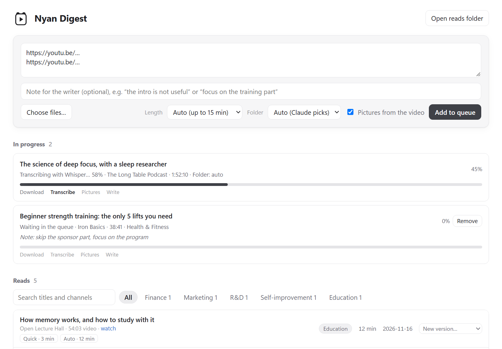
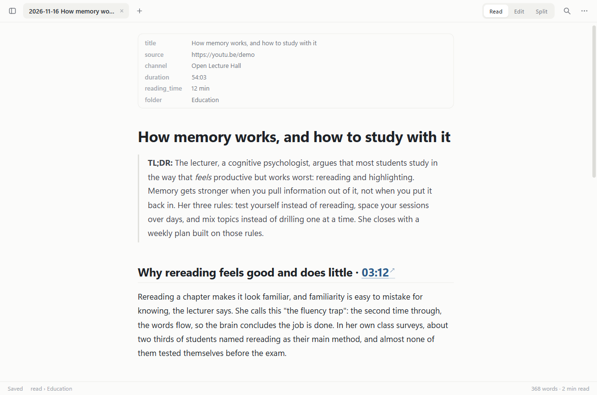
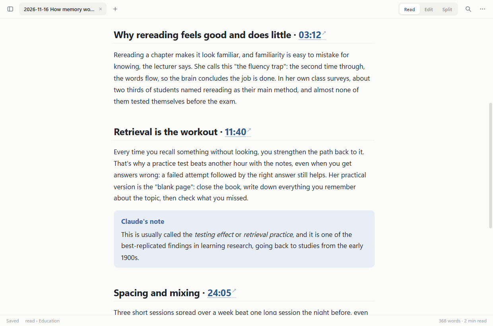

An hour of video,
a ten-minute read.
Paste a YouTube link or drop in a podcast or video file. Nyan Digest listens to all of it, picks the pictures that matter, and an AI writer (Claude, Gemini or Codex) turns it into a calm, faithful read, with links back to the exact moment.
Download for Windows
Add a link, get a read
Each video goes through four steps on its own. You can close the window: the queue keeps going.
- Downloadthe audio, or YouTube's own captions when they're good
- Transcribewith Whisper, right on your PC, when there are no captions
- Picturesthe slides, drawings and moves worth seeing
- Writeyour AI writer turns it into a read in your
readsfolder
Pick a length
Quick (2–4 min), Medium (5–10), Auto (up to 15) or Deep (up to 25). Want another one later? Ask for a new version in one click.
Leave a note
"The intro is not useful", "focus on the training part": one line, and the writer follows it.
Pictures and diagrams
When something on screen matters, a slide, a chart, a technique, it's in the read. When an idea has a shape, a process or a cycle, the writer draws it.
Jump to the moment
Every section has a timecode. Click it and the video opens right where that part starts.
Faithful, with the writer's notes
The read says what the speaker said, nothing made up. When a claim needs context, the writer adds a short, clearly marked note.
Sorted for you
Reads land in folders like Finance or Health & Fitness. The writer picks one, or you do. Search your history any time.


Reads are plain Markdown files, so any Markdown app opens them. They look best in Nyan Notes, our free reader, shown above.
Set up once, in about ten minutes
The setup installs everything Nyan Digest needs and skips what you already have. No admin rights needed.
Download and unzip
Get the zip, right-click it, choose Extract all, and keep the Nyan Digest folder somewhere like Documents.
Run setup.bat
Open the folder and double-click setup.bat. It installs Python, ffmpeg and your AI writer (Claude Code, Gemini CLI or Codex), and helps you sign in.
Paste a link
Open Nyan Digest from your desktop, paste a YouTube link, click Add to queue. Your read shows up when it's done.
Good to know
Honest answers to the questions people ask first.
What do I need?
A Windows 10 or 11 PC with about 1.5 GB free, and one AI writer. Setup asks which one and installs it:
- Claude Code with a Claude account on a paid plan (Pro or above). The best reads.
- Codex with a ChatGPT account. A strong writer too.
- Gemini CLI with a free API key from Google AI Studio (setup shows you how). Free, but limited: only a few reads a day, often from a lighter model, so reads are shorter and less polished. Good for trying it out; for the best results use Claude Code or Codex.
Is it free?
Nyan Digest is free. The writing uses your own account with the writer you picked. With Gemini and a free key it costs nothing, but Google's free limits allow only a few reads a day (when they're used up, the app tells you and you can retry the next day). With Claude or Codex, a read takes a small share of your plan's usage.
How long does a video take?
When YouTube has good captions, a few minutes. Otherwise the audio is transcribed on your PC: on a laptop without a graphics card, an hour of audio takes about 40 minutes. A recent NVIDIA graphics card makes it much faster, and the setup uses it automatically.
Windows says "Windows protected your PC", or asks if I want to run setup.bat.
Windows asks that about scripts downloaded from the internet. Click More info, then Run anyway (or Run). You only need to do it once.
Does it work with my own files?
Yes. Click Choose files… or drop video and audio files on the window: mp4, mkv, mov, mp3, m4a, wav and more.
Where do my videos and reads go?
Transcribing and picking pictures happen on your PC. To write the read, the transcript (and a few candidate pictures) are sent to your AI writer: Anthropic for Claude, Google for Gemini, OpenAI for Codex. Your reads are saved in the reads folder, on your PC. Read the privacy page.
How do I update it?
Download the new zip, unzip it over your Nyan Digest folder (replace the files), and run setup.bat again. Your reads, history and settings stay.
How do I remove it?
Open the Nyan Digest folder and double-click uninstall.bat. It removes the app, its shortcut and its downloads, and asks before touching your reads (it keeps them by default). Python, ffmpeg, Node.js and your AI writer stay installed, because other apps may use them; the uninstaller tells you how to remove them too.